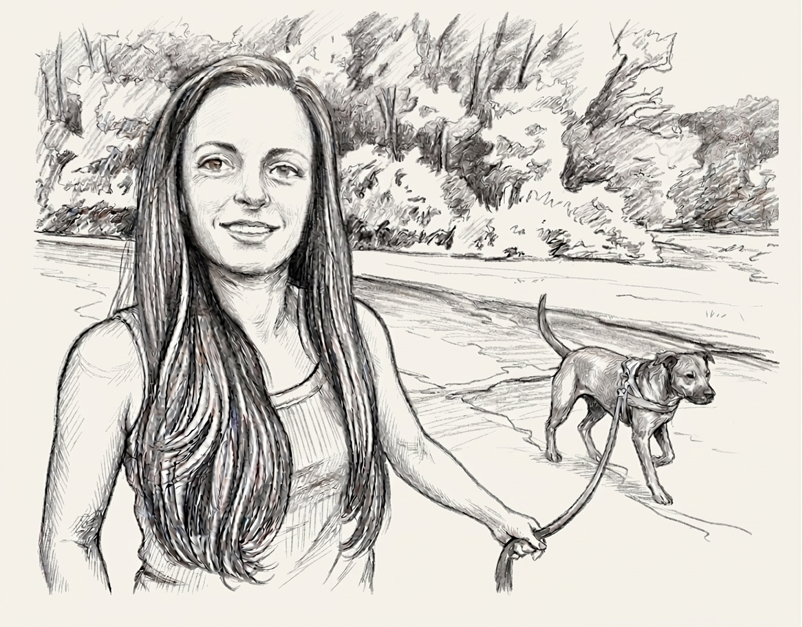
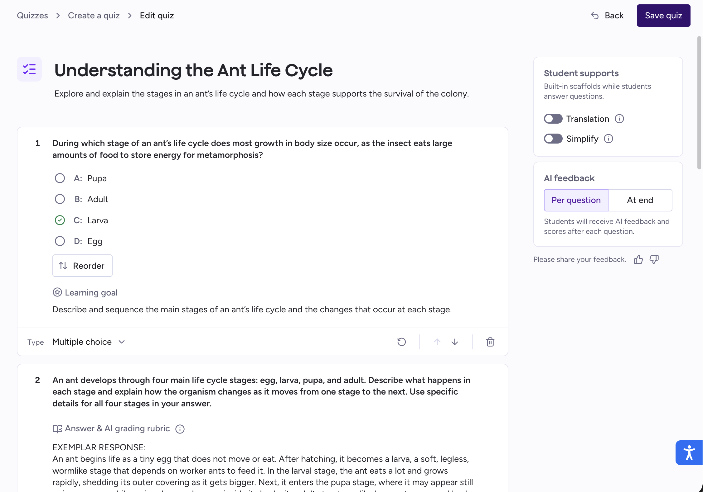
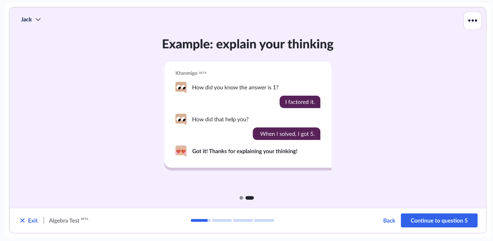
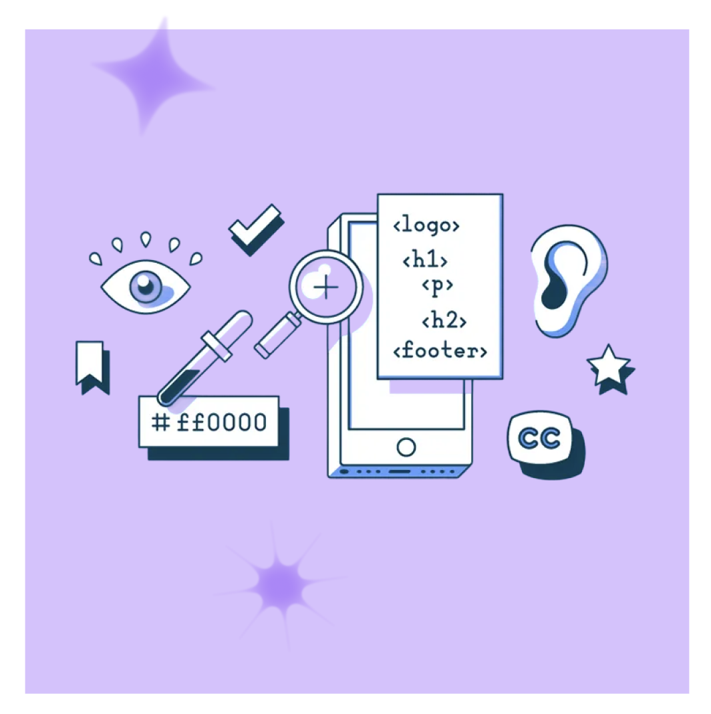
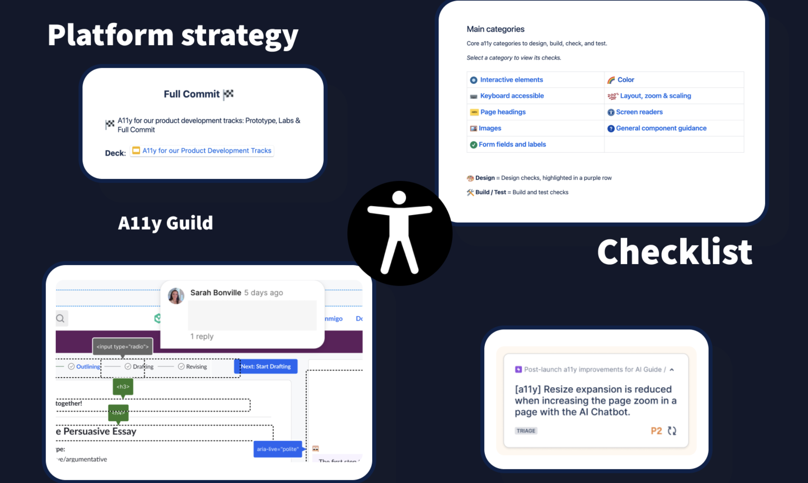
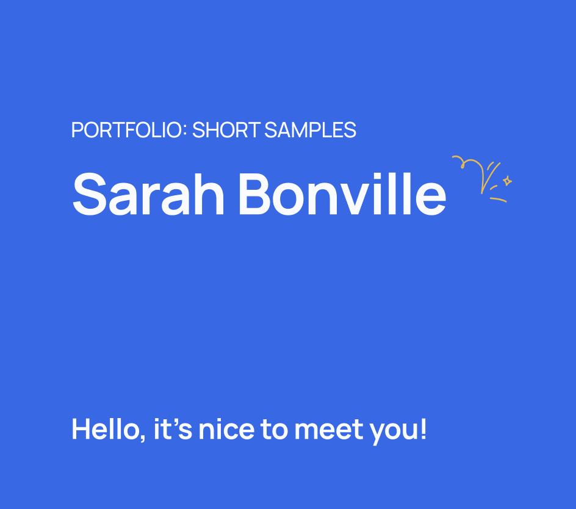
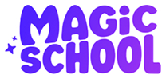

Hey there, I'm
I design products that work for everyone — not just the people the happy path was drawn for. Twelve years of shipping across ed-tech, insurance, and consumer apps, most of it spent making complex flows simpler and reachable by keyboard, screen reader, and low-vision users alike.
Roles rotate automatically — hover or focus the line to hold it.

Right now
Senior Product Designer at Magic School. Previously a Senior Product Designer at Khan Academy, where I also led platform accessibility.
Projects to highlight
Some live here as full case studies, some as Figma decks. Labels tell you which.

MagicSchool AI
MagicQuizzes: from zero to shipped
Designed MagicSchool AI's quiz builder with built-in student supports like translation and simplified language, plus AI feedback and scoring after every question.
Figma deck
Khan Academy
Interim assessment pilot
Reworked the practice-and-feedback loop so students learn from a wrong answer instead of stalling on it. The team was building the first pilot when I left Khan Academy.
Figma deckAccessibility case studies
For me, accessibility is less about running through a list of individual checks (though checklists have their place) and more about building the strategy, culture, and systems that make it the default at a company, not a last step. Here's what that's looked like at two of them:

Building an accessibility practice
At MagicSchool AI I built the company's entire accessibility practice from scratch: audit, VPAT, a weekly cross-functional Guild, and a design system with accessibility built in by default.
See the case study
Platform accessibility, end to end
At Khan Academy I ran accessibility across product teams: shared patterns, review rituals, and training so other designers could ship accessible work without me in the room.
See the case studyAll my work, by company
Short work samples that show the breadth of my work. Reach out for longer case studies!

A handful of really short samples spanning years of work, to quickly show breadth.
MagicSchool AI
2025 — now
Khan Academy
2022 — 2024Sun Life
2021 — 2022Twenty+ years of digital design
-
2025 — now

Senior Product Designer · Magic School Current -
2022 — 2024 Senior Product Designer, Platform Accessibility · Khan Academy
-
2021 — 2022 Senior User Experience Designer · Sun Life
-
2020 — 2021 User Experience Lead · Travelers Insurance
-
2018 — 2020 Senior User Interface Designer · SwingU
-
2013 — 2018 Product Designer · Finalsite
-
2005 — 2013 ROOTS Early career · Miranda Creative, Pyramid Marketing Design & Technology Website designer and front-end developer at two Connecticut creative agencies — client work, hand-written HTML/CSS, and the habit of shipping. Before UX was a job title.
Nice to meet you.
I got my start at small creative agencies, designing and building websites by hand, before content management systems existed and before "UX" was even a job title.
A big part of that work was watching, observing, and listening to the people actually using what I built, and that's still at the core of how I design today. I work across the full UX and product design lifecycle: research, system design, and prototyping, through launch and iteration.
Outside of work, I like walking my dog through the woods, spending time with my family, and traveling to new places. I also love a good tea blend.